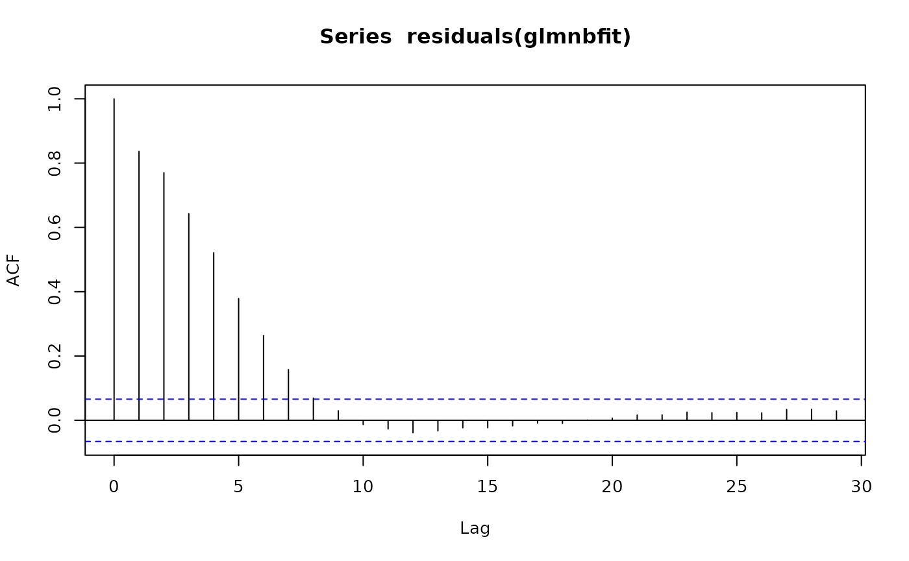
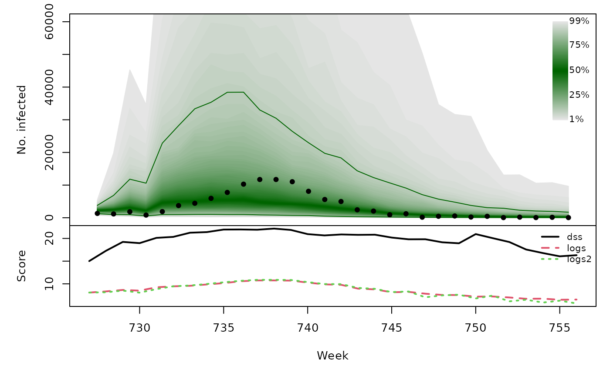
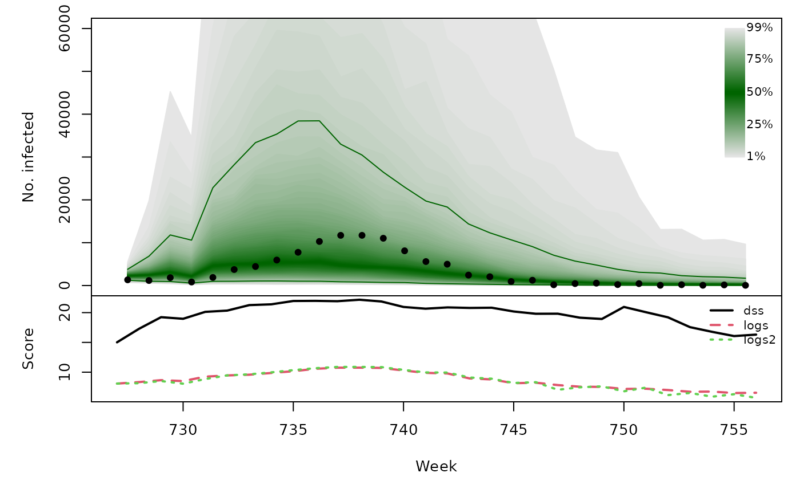

Forecasting Swiss ILI counts using glarma::glarma
Sebastian Meyer
2019-03-29
Source:vignettes/CHILI_glarma.Rmd
CHILI_glarma.Rmdoptions(digits = 4) # for more compact numerical outputs
library("HIDDA.forecasting")
library("ggplot2")
source("setup.R", local = TRUE) # define test periods (OWA, TEST)In this vignette, we use forecasting methods provided by:
The corresponding software reference is:Dunsmuir WT, Li C, Scott DJ (2018). glarma: Generalized Linear Autoregressive Moving Average Models. R package version 1.6-0, https://CRAN.R-project.org/package=glarma.
Modelling
Construct the design matrix, including yearly seasonality and a Christmas effect as for the other models (see, e.g., vignette("CHILI_hhh4")):
y <- as.vector(CHILI)
X <- t(sapply(2*pi*seq_along(CHILI)/52.1775,
function (x) c(sin = sin(x), cos = cos(x))))
X <- cbind(intercept = 1,
X,
christmas = as.integer(strftime(index(CHILI), "%V") == "52"))Fitting a NegBin-GLM:
##
## Call:
## MASS::glm.nb(formula = y ~ 0 + X, init.theta = 1.462957221, link = log)
##
## Deviance Residuals:
## Min 1Q Median 3Q Max
## -2.055 -1.024 -0.481 0.234 5.359
##
## Coefficients:
## Estimate Std. Error z value Pr(>|z|)
## Xintercept 7.4320 0.0281 264.78 < 2e-16 ***
## Xsin 0.7540 0.0393 19.19 < 2e-16 ***
## Xcos 1.8892 0.0401 47.12 < 2e-16 ***
## Xchristmas -0.8928 0.2066 -4.32 1.5e-05 ***
## ---
## Signif. codes: 0 '***' 0.001 '**' 0.01 '*' 0.05 '.' 0.1 ' ' 1
##
## (Dispersion parameter for Negative Binomial(1.463) family taken to be 1)
##
## Null deviance: 6600647.14 on 887 degrees of freedom
## Residual deviance: 983.24 on 883 degrees of freedom
## AIC: 14869
##
## Number of Fisher Scoring iterations: 1
##
##
## Theta: 1.4630
## Std. Err.: 0.0633
##
## 2 x log-likelihood: -14859.3740
Fitting a NegBin-GLARMA with orders \(p = 4\) and \(q = 0\):
glarmafit <- glarma(y = y, X = X, type = "NegBin", phiLags = 1:4)
## philags = 1:4 corresponds to ARMA(4,4) with theta_j = phi_j
summary(glarmafit)##
## Call: glarma(y = y, X = X, type = "NegBin", phiLags = 1:4)
##
## Pearson Residuals:
## Min 1Q Median 3Q Max
## -2.036 -0.694 -0.190 0.454 7.453
##
## Negative Binomial Parameter:
## Estimate Std.Error z-ratio Pr(>|z|)
## alpha 5.103 0.207 24.7 <2e-16 ***
##
## GLARMA Coefficients:
## Estimate Std.Error z-ratio Pr(>|z|)
## phi_1 0.2595 0.0168 15.44 < 2e-16 ***
## phi_2 0.2475 0.0147 16.89 < 2e-16 ***
## phi_3 0.1038 0.0136 7.64 2.2e-14 ***
## phi_4 0.0743 0.0160 4.64 3.5e-06 ***
##
## Linear Model Coefficients:
## Estimate Std.Error z-ratio Pr(>|z|)
## intercept 7.2723 0.0716 101.51 < 2e-16 ***
## sin 0.5732 0.1034 5.54 3.0e-08 ***
## cos 1.7635 0.0757 23.29 < 2e-16 ***
## christmas -0.4781 0.0901 -5.31 1.1e-07 ***
##
## Null deviance: 3351.66 on 886 degrees of freedom
## Residual deviance: 907.31 on 878 degrees of freedom
## AIC: 13646
##
## Number of Fisher Scoring iterations: 30
##
## LRT and Wald Test:
## Alternative hypothesis: model is a GLARMA process
## Null hypothesis: model is a GLM with the same regression structure
## Statistic p-value
## LR Test 1232 <2e-16 ***
## Wald Test 565 <2e-16 ***
## ---
## Signif. codes: 0 '***' 0.001 '**' 0.01 '*' 0.05 '.' 0.1 ' ' 1par(mfrow = c(3,2))
set.seed(321) # for strict reproducibility (randomized residuals)
plot(glarmafit)
Note: Alternative GLARMA models using both phiLags and thetaLags did not converge. In an AIC comparison among the remaining models, the above model with \(p=4\) (and \(q=0\)) had lowest AIC.
CHILIdat <- fortify(CHILI)
CHILIdat$glarmafitted <- fitted(glarmafit)
CHILIdat <- cbind(CHILIdat,
sapply(c(glarmalower=0.025, glarmaupper=0.975), function (p)
qnbinom(p, mu = glarmafit$mu, size = coef(glarmafit, type = "NB"))))ggplot(CHILIdat, aes(x=Index, ymin=glarmalower, y=glarmafitted, ymax=glarmaupper)) +
geom_ribbon(fill="orange") + geom_line(col="darkred") +
geom_point(aes(y=CHILI), pch=20) +
scale_y_sqrt(expand = c(0,0), limits = c(0,NA))
One-week-ahead forecasts
We compute 213 one-week-ahead forecasts from 2012-W48 to 2016-W51 (the OWA period). The model is refitted at each time point.
For each time point, refitting and forecasting with glarma takes about 1.5 seconds, i.e., computing all one-week-ahead forecasts takes approx. 5.3 minutes … but we can parallelize.
glarmaowa <- t(simplify2array(surveillance::plapply(X = OWA, FUN = function (t) {
glarmafit_t <- glarma(y = y[1:t], X = X[1:t,,drop=FALSE], type = "NegBin", phiLags = 1:4)
c(mu = forecast(glarmafit_t, n.ahead = 1, newdata = X[t+1,,drop=FALSE])$mu,
coef(glarmafit_t, type = "NB"))
}, .parallel = 3)))
save(glarmaowa, file = "glarmaowa.RData")surveillance::pit(
x = CHILI[OWA+1], pdistr = pnbinom,
mu = glarmaowa[,"mu"], size = glarmaowa[,"alpha"],
plot = list(ylab = "Density")
)
glarmaowa_scores <- surveillance::scores(
x = CHILI[OWA+1], mu = glarmaowa[,"mu"],
size = glarmaowa[,"alpha"], which = c("dss", "logs"))
summary(glarmaowa_scores)## dss logs
## Min. : 7.28 Min. : 4.57
## 1st Qu.:10.71 1st Qu.: 6.14
## Median :13.60 Median : 7.68
## Mean :13.59 Mean : 7.71
## 3rd Qu.:15.63 3rd Qu.: 8.91
## Max. :30.19 Max. :11.97glarmaowa_quantiles <- sapply(X = 1:99/100, FUN = qnbinom,
mu = glarmaowa[,"mu"],
size = glarmaowa[,"alpha"])
osaplot(
quantiles = glarmaowa_quantiles, probs = 1:99/100,
observed = CHILI[OWA+1], scores = glarmaowa_scores,
start = OWA[1]+1, xlab = "Week", ylim = c(0,60000),
fan.args = list(ln = c(0.1,0.9), rlab = NULL)
)
Long-term forecasts
glarmasims <- surveillance::plapply(TEST, function (testperiod) {
t0 <- testperiod[1] - 1
fit0 <- glarma(y = y[1:t0], X = X[1:t0,,drop=FALSE], type = "NegBin", phiLags = 1:4)
set.seed(t0)
sims <- replicate(n = 1000, {
fc <- forecast(fit0, n.ahead = length(testperiod),
newdata = X[testperiod,,drop=FALSE],
newoffset = rep(0,length(testperiod)))
do.call("cbind", fc[c("mu", "Y")])
}, simplify = "array")
list(testperiod = testperiod,
observed = as.vector(CHILI[testperiod]),
fit0 = fit0, means = sims[,"mu",], sims = sims[,"Y",])
}, .parallel = 2)PIT histograms, based on the pointwise ECDF of the simulated epidemic curves:
invisible(lapply(glarmasims, function (x) {
surveillance::pit(x = x$observed, pdistr = apply(x$sims, 1, ecdf),
plot = list(main = format_period(x$testperiod, fmt = "%Y", collapse = "/"),
ylab = "Density"))
}))
Just like for the simulations from hhh4() in vignette("CHILI_hhh4"), we can compute the log-score either using generic kernel density estimation as implemented in the scoringRules package, or via mixtures of negative binomial one-step-ahead distributions. A comparison for the first simulation period:
## using kernel density estimation
summary(with(glarmasims[[1]], scoringRules::logs_sample(observed, sims)))## Min. 1st Qu. Median Mean 3rd Qu. Max.
## 6.44 7.58 8.98 9.24 11.22 12.67## using `dnbmix()`
summary(with(glarmasims[[1]], logs_nbmix(observed, means, coef(fit0, type="NB"))))## Min. 1st Qu. Median Mean 3rd Qu. Max.
## 6.26 7.29 9.06 9.28 11.27 12.67t(sapply(glarmasims, function (x) {
quantiles <- t(apply(x$sims, 1, quantile, probs = 1:99/100))
scores <- cbind(
scores_sample(x$observed, x$sims),
logs2 = logs_nbmix(x$observed, x$means, coef(x$fit0, type="NB"))
)
osaplot(quantiles = quantiles, probs = 1:99/100,
observed = x$observed, scores = scores,
start = x$testperiod[1], xlab = "Week", ylim = c(0,60000),
fan.args = list(ln = c(0.1,0.9), rlab = NULL))
colMeans(scores)
}))## dss logs logs2
## [1,] 19.81 9.244 9.279
## [2,] 19.75 8.653 8.534
## [3,] 19.28 9.301 9.201
## [4,] 19.58 9.436 9.446 
